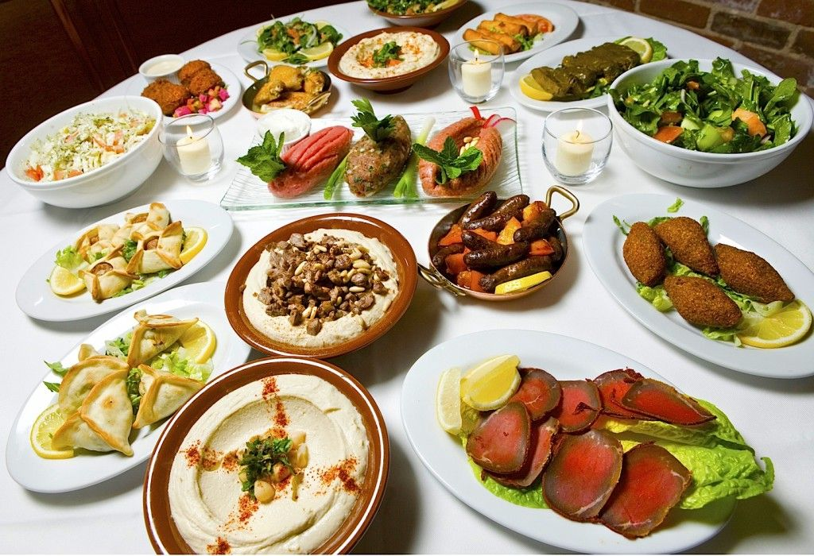
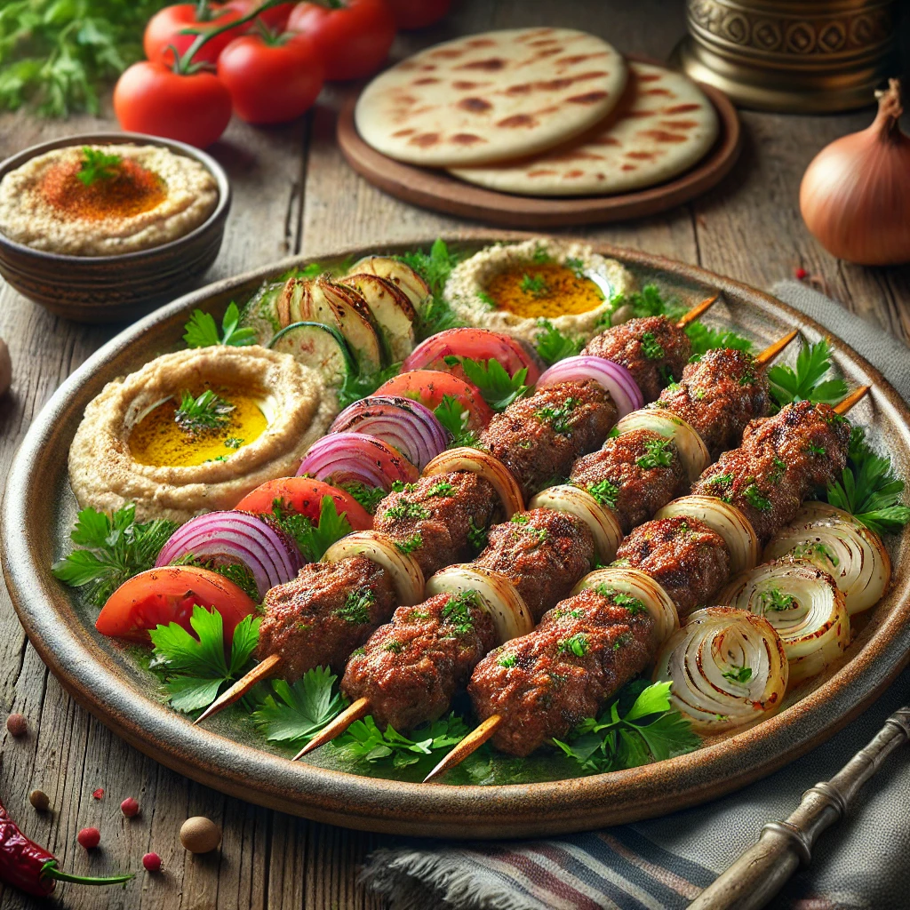
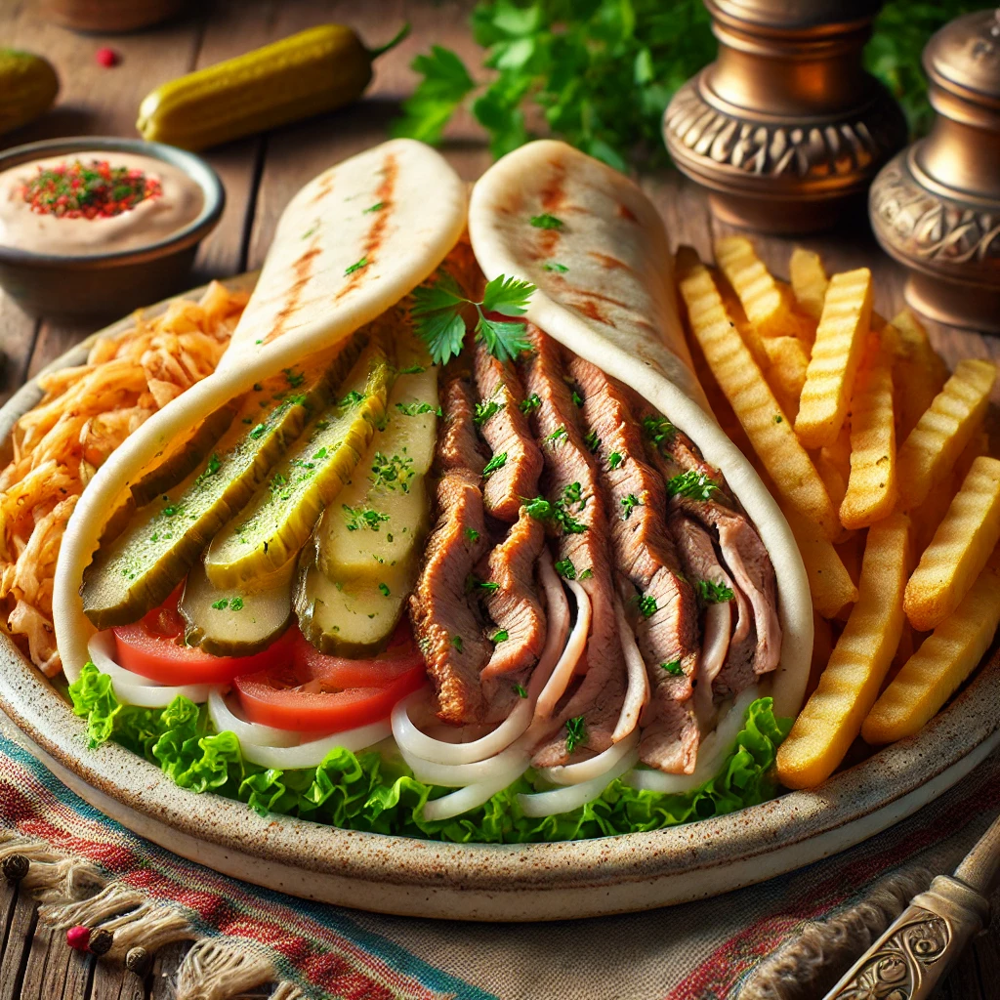
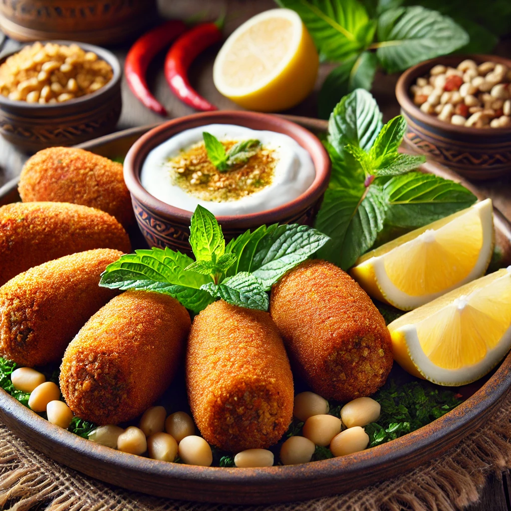
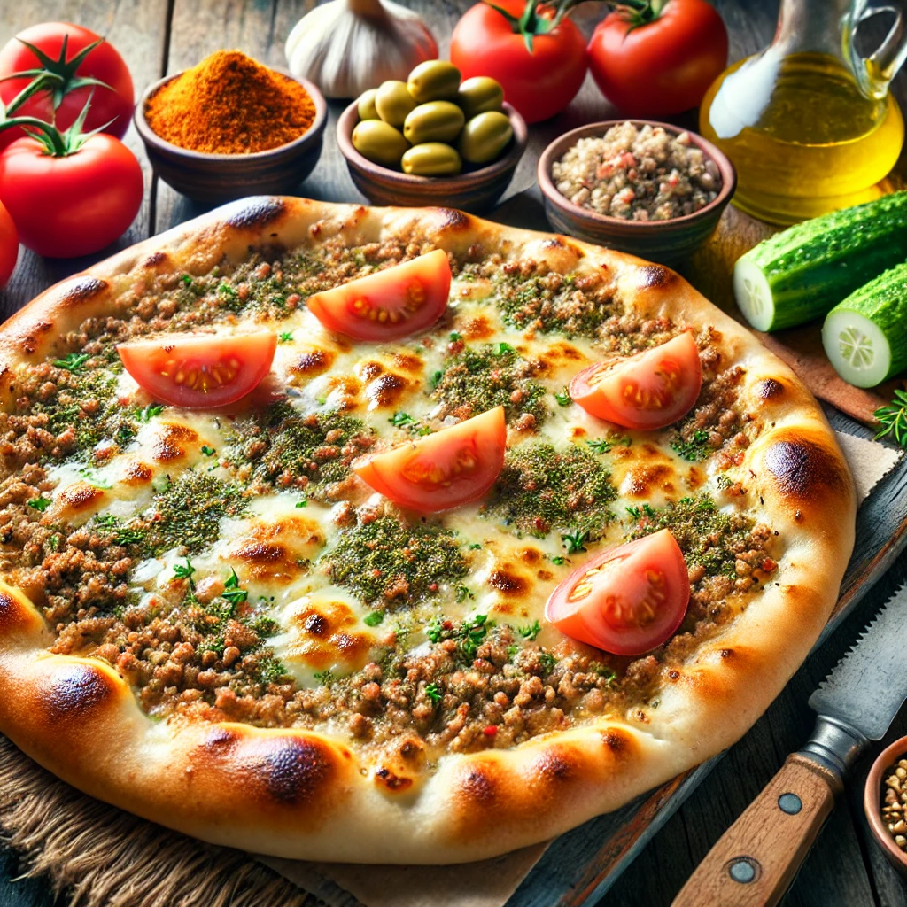

My favourite things to eat in Lebanon are:
- 
- Mezze: A selection of small dishes like hummus, baba ghanoush, tabbouleh, and fattoush, usually served as appetizers.
- 
- Kafta: Spiced meat kebabs made with minced lamb or beef, mixed with parsley and onions, often grilled.
- 
- Shawarma: Marinated meat, usually beef or chicken, cooked on a rotating spit, often served in a wrap with garlic sauce, tomatoes, and pickles.
- 
- Kibbeh: Ground meat, usually lamb, mixed with bulgur and spices, served in various forms like kibbeh nayyeh (raw), fried, or baked.
- 
- Manakish: A flatbread topped with za'atar, cheese, or minced meat, often enjoyed as a breakfast or snack.